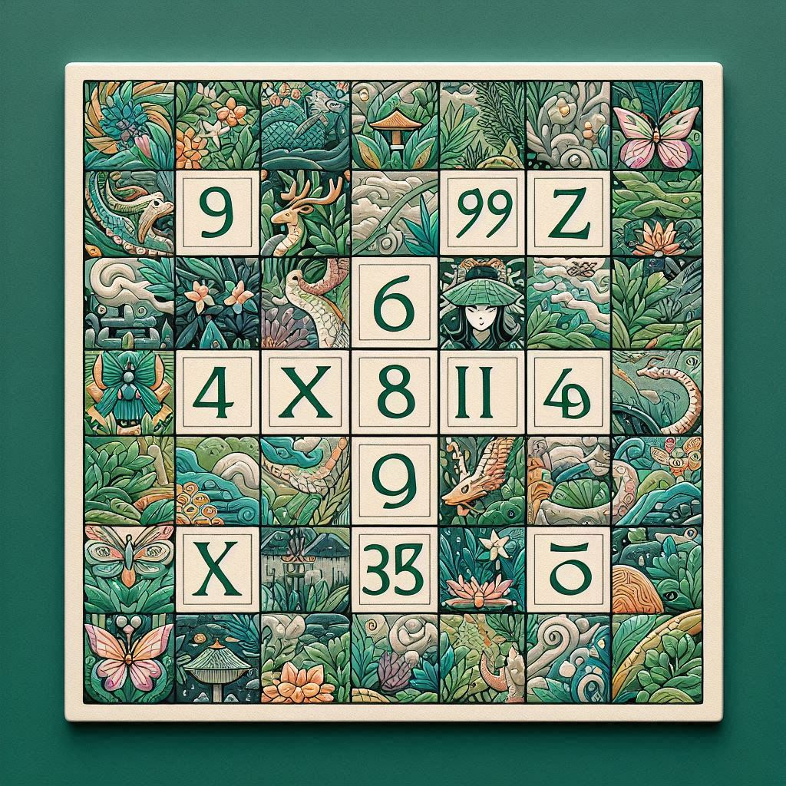

Sudoku Arte 
Venhar jogar online!
Sobre Sudoku
O Sudoku é um jogo de lógica e raciocínio que conquistou milhões de fãs ao redor do mundo. Originado no Japão, seu nome significa "número único", refletindo a premissa central do jogo: completar uma grade de 9x9 com números de 1 a 9, sem repetir nenhum número em uma linha, coluna ou região 3x3.
Como Jogar
O tabuleiro de Sudoku começa parcialmente preenchido, e o objetivo é completar a grade inteira seguindo as regras mencionadas. O grau de dificuldade pode variar, desde quebra-cabeças fáceis, com muitas pistas dadas, até desafios verdadeiramente complexos, exigindo pensamento estratégico avançado.
Benefícios do Sudoku
Jogadores de todas as idades podem desfrutar dos inúmeros benefícios mentais oferecidos pelo Sudoku:
- Aprimora a concentração: Resolver um quebra-cabeças requer foco e atenção aos detalhes.
- Estimula a mente: Ajuda a manter o cérebro ativo e a exercitar habilidades de raciocínio lógico.
- Reduz o estresse: A sensação de resolver um quebra-cabeças difícil pode ser relaxante e satisfatória.
Dicas para Iniciantes
Se você está começando a jogar Sudoku, aqui estão algumas dicas úteis:
- Comece com quebra-cabeças fáceis: Permita-se aprender as regras e estratégias básicas sem se sobrecarregar.
- Utilize a lógica, não a adivinhação: O Sudoku é um jogo de lógica pura, e cada movimento deve ser baseado em deduções racionais.
- Preste atenção aos padrões: Desenvolver a habilidade de reconhecer padrões na grade pode acelerar seu progresso.
Conclusão
O Sudoku é mais do que apenas um passatempo; é um exercício mental que pode ser aproveitado em qualquer idade. Com paciência e prática, qualquer pessoa pode se tornar habilidosa e desfrutar dos desafios que esse jogo fascinante proporciona.